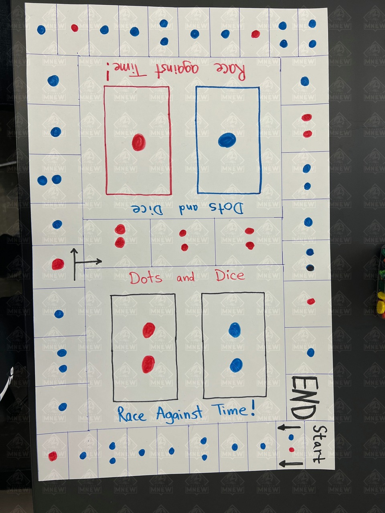

Dots and Dice!
Dots and Dice: Race Against Time! The story of my game!
Description:
Dots and Dice: Race Against Time is a board game where anywhere from 1-4 players work together to traverse through the board using their dice (2 per player) and their pawn (player character/token). Complete the time restricted challenges that pop up without failing and reach the end! Players have a choice between a shorter more difficult path, and a longer but easier path. If failure occurs during any of the rounds... players must go back to the starting position! Grab your dice, land on some dots, and roll away!
Initial board design (before first play test): Board Version 0
 My First Play Test in Class at SJSU on February 14th 2022: This session consisted of deciding what mechanics I wanted to use for my game and some of the rules. My partner Rheya decided she liked my idea so we stuck with it. The theme I brainstormed before class was dealing with patients in a hospital, where every tile had different patients you would treat by rolling the dice numbers listed in boxes on notecards. The main mechanisms that we used were Dice Rolling(movement and playing during rounds), Real-Time (time constraint during rounds), Cooperative Game (players work together and progress equally). We played the game, mixed up different kinds of dots that varied in difficulty, and added a shorter difficult path + a longer easier path to choose from. Each round had a time limit of 35 seconds. Players cooperated to rack up points from healing patients. The game felt good during play and we really enjoyed it. The only issues we ran into were that rules took a long time to explain.
My First Play Test in Class at SJSU on February 14th 2022: This session consisted of deciding what mechanics I wanted to use for my game and some of the rules. My partner Rheya decided she liked my idea so we stuck with it. The theme I brainstormed before class was dealing with patients in a hospital, where every tile had different patients you would treat by rolling the dice numbers listed in boxes on notecards. The main mechanisms that we used were Dice Rolling(movement and playing during rounds), Real-Time (time constraint during rounds), Cooperative Game (players work together and progress equally). We played the game, mixed up different kinds of dots that varied in difficulty, and added a shorter difficult path + a longer easier path to choose from. Each round had a time limit of 35 seconds. Players cooperated to rack up points from healing patients. The game felt good during play and we really enjoyed it. The only issues we ran into were that rules took a long time to explain.
Here are the mechanics descriptions on Board Game Geek:
https://boardgamegeek.com/boardgamemechanic/2831/real-time
https://boardgamegeek.com/boardgamemechanic/2072/dice-rolling
https://boardgamegeek.com/boardgamemechanic/2023/cooperative-game
Screenshot after session 1 (Board and cards that were used) Version 1
 Second Play Session (w/ family members) And What Changed: My second play session I was satisfied with the core mechanic of the game and I wanted to rework the theme/board and hone in on what time constraints should be used each round. My theme before was too complicated and therefore I simplified it down to just rolling the dice to move, landing on certain dot variations that range in difficulty, and progressing cooperatively. I also changed the medical complicated idea into a simple board or casino game you would play with your friends. Instead of trying to match your dice to a pattern similar to the human body, you just roll dice that add up to the number on the card when it is flipped over (similar to "craps" at a casino). I made this change so that rules would be easily understood by anyone, even for people who struggled with the English language or were new to games. On version one, my time constraint was 35 seconds, and I changed/lowered this to 30 seconds for version two after I played it a few times with my parents. The reason I made this change was to increase the challenge presented and the risk associated with choosing the shorter path of travel. I also added better visuals to understand what square you are on and what cards you draw when you are on them. There are also 4 separate stacks of cards for easy grabbing.
Second Play Session (w/ family members) And What Changed: My second play session I was satisfied with the core mechanic of the game and I wanted to rework the theme/board and hone in on what time constraints should be used each round. My theme before was too complicated and therefore I simplified it down to just rolling the dice to move, landing on certain dot variations that range in difficulty, and progressing cooperatively. I also changed the medical complicated idea into a simple board or casino game you would play with your friends. Instead of trying to match your dice to a pattern similar to the human body, you just roll dice that add up to the number on the card when it is flipped over (similar to "craps" at a casino). I made this change so that rules would be easily understood by anyone, even for people who struggled with the English language or were new to games. On version one, my time constraint was 35 seconds, and I changed/lowered this to 30 seconds for version two after I played it a few times with my parents. The reason I made this change was to increase the challenge presented and the risk associated with choosing the shorter path of travel. I also added better visuals to understand what square you are on and what cards you draw when you are on them. There are also 4 separate stacks of cards for easy grabbing.
Here is the picture of the new board Version 2:

Here are samples for what the cards and supplies look like:
 Third Play Session in Class (Play and Enjoy): This session I focused on how playable the game was and how easy the rules were to understand. My two partners I worked with enjoyed the game and I was able to explain the rules to them with 5 sentences. It can't be any more simple than that. I did not make any changes to the core mechanics or the theme/board, as everything already felt polished and understandable. I was very happy with this, and my game was fun + visually appealing. The only change I made was that I realized my game can be played with up to four players. The only real limitations are desk space and dice, as each player needs two dice of their own and an area to roll them in.
Overall making my board game was a load of fun, and luckily the core mechanics I chose were easy to work with, leading me to need less changes and refinement in terms of mechanics. Most of my refinement came in the form of board space and tile dot placement. I kept the same mechanics all the way from version 0 to version 2. My final mechanics were Real Time, Dice Rolling, and Cooperative Game. Thanks for reading and following the journey of my board game Dots and Dice: Race Against Time!
Third Play Session in Class (Play and Enjoy): This session I focused on how playable the game was and how easy the rules were to understand. My two partners I worked with enjoyed the game and I was able to explain the rules to them with 5 sentences. It can't be any more simple than that. I did not make any changes to the core mechanics or the theme/board, as everything already felt polished and understandable. I was very happy with this, and my game was fun + visually appealing. The only change I made was that I realized my game can be played with up to four players. The only real limitations are desk space and dice, as each player needs two dice of their own and an area to roll them in.
Overall making my board game was a load of fun, and luckily the core mechanics I chose were easy to work with, leading me to need less changes and refinement in terms of mechanics. Most of my refinement came in the form of board space and tile dot placement. I kept the same mechanics all the way from version 0 to version 2. My final mechanics were Real Time, Dice Rolling, and Cooperative Game. Thanks for reading and following the journey of my board game Dots and Dice: Race Against Time!